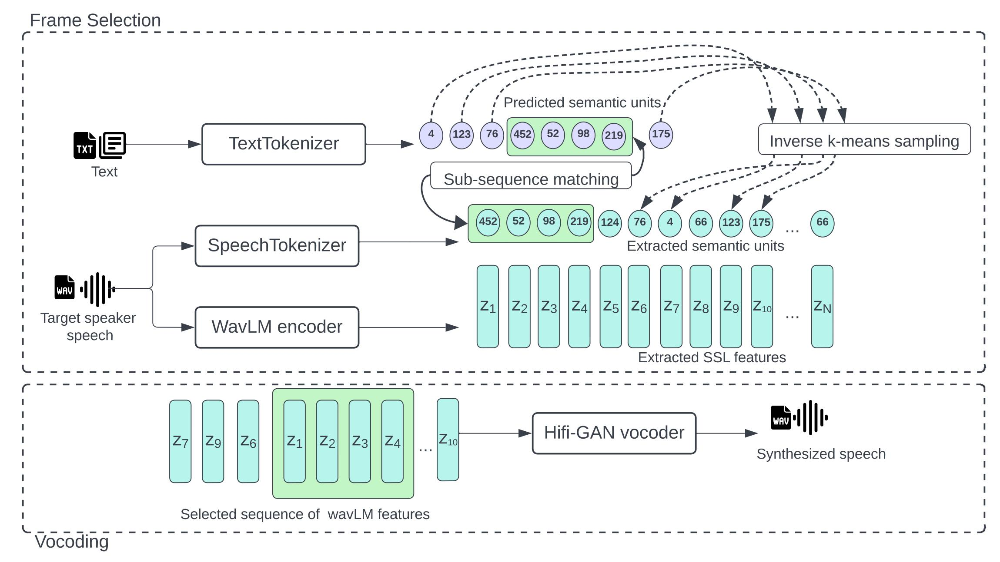

SelectTTS: Synthesizing anyone's voice via unit-based frame selection of self-supervised features
WEBSITE BUILD IN PROGRESS. ETA : 20th march 2024
SelectTTS: Synthesizing anyone's voice via unit-based frame selection of self-supervised features
Authors : Anonymous
Submitted to Interspeech 2024. Codes will released after acceptance.
Abstract
Synthesizing the voices of unseen speakers is a persisting challenge in multispeaker text-to-speech (TTS) systems. Most end-to-end multispeaker TTS models rely on incorporating speaker characteristics through speaker conditioning during training. Modeling unseen speaker attributes through this approach has necessitated an increase in model complexity, which makes it challenging to reproduce results and improve upon them.
We design a simple alternative to this. We propose SelectTTS, a novel method to select the appropriate frames from the target speaker and decode using frame-level self-supervised learning (SSL) features. We show that this approach can effectively capture speaker characteristics for unseen speakers, and achieves comparable results to other multispeaker-TTS frameworks in both objective and subjective metrics. With SelectTTS, we show that frame selection from the target speaker's speech is a direct way to achieve generalization in unseen speakers
Model Architecture

Select-TTS
Let's test the speaker similarity (unseen speakers)
Text
MS-DU TTS
YourTTS [1]
Select-TTS
You must tell me the story
I didn't say I believed it!
How long have you been here?
Then it is ordered so recorded.
It was fully ten minutes before he could make himself heard.
It is very important to keep the butter in a cool place.
I dare say you think I am talking nonsense
How much reference speech do we need?
Text
Ground truth
/<10 seconds
30 seconds
1 minute
5 minutes
10 minutes
And when will that be?
But we knew they would tackle it by themselves if we backed out
You have excited my curiosity
Note women who have captivated men
The jars for this purpose should not have been previously used for pickles
References
[1] YourTTS: Towards Zero-Shot Multi-Speaker TTS and Zero-Shot Voice Conversion for everyone